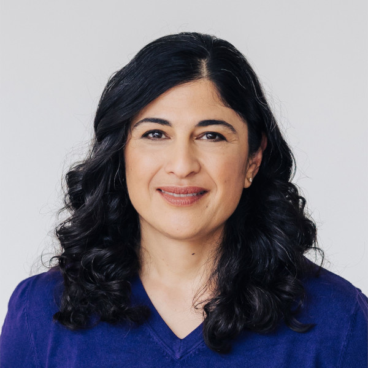

Dekanatsteam

Ghazaleh Tabatabai
DekaninÄrztliche Direktorin Neuroonkologie
Nisar Malek
Prodekan Struktur und EntwicklungÄrztlicher Direktor Innere Medizin I
Mathias Heikenwälder
Prodekan ForschungGeschäftsführer Forschungszentrum M3
André Mihaljevic
Prodekan LehreÄrztlicher Direktor Allg., Visz.- und Transplantationschirurgie

Carsten Eickhoff
Prodekan Digitalisierung und KIWissenschaftlicher Direktor meDIC